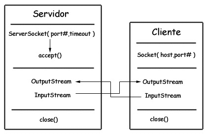
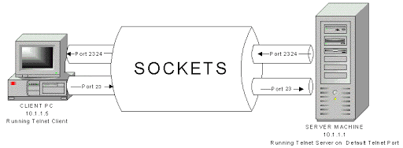
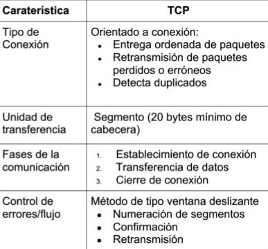

Socket TCP
Viernes 29 de Mayo del 2020
Caracteristicas Socket TCP
- El cliente debe contactar con el servidor
- El servidor debe estar ejecutándose primero
- El servidor debe haber creado un socket por el que espera que el cliente contacte con él
- El cliente crea su propio socket
- Especifica la dirección IP del servidor y el puerto de la aplicación
- Entonces se establece la conexión TCP con el servidor
- Cuando el servidor es contactado crea un nuevo socket TCP para la comunicación con el cliente
- Permite que el servidor se comunique con varios clientes simultáneamente
- La dirección IP del cliente y el puerto empleado por su aplicación sirven para distringuirlos

Caracteristicas Protocolo TCP

Sockets TCP
- Clase mas importante= Java.net.Socket
- Cliente para establecer conexión necesita crear un objeto socket
- Socket s= new Socket("servidor",puerto)
- Escribe → OutputStream
- Lee → InputStream
- Cerrar todo y liberar recursos → s.close
- Cerrar todo y liberar recursos → s.close
- Cuando el servidor es contactado crea un nuevo socket TCP para la comunicación con el cliente
- Permite que el servidor se comunique con varios clientes simultáneamente
- La dirección IP del cliente y el puerto empleado por su aplicación sirven para distringuirlos